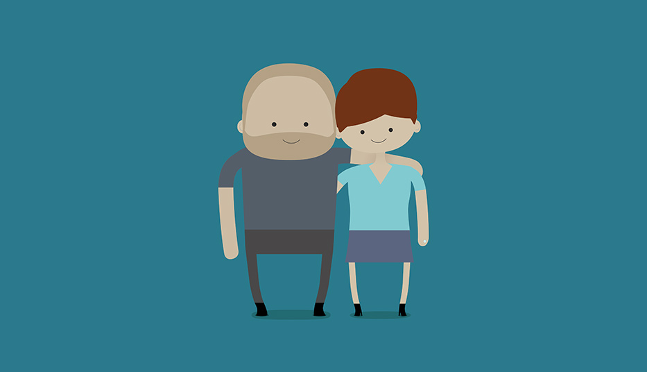

I'm a designer and creative technologist living in London. I've worked for the University of Edinburgh, Taxi Canada, and Havas Worldwide. I like making things.
A self initiated project to let our guests know about our wedding. I created a series of illustrations of Helen and me that we used across the wedding pieces.
I designed, illustrated and built the site from scratch, including logins and an RSVP form.
The site uses a backround masking technique that allows for a playful transition between the images, which all feature the same characters, in the same pose, but with different costumes and props.
As an archive of work for Havas Worldwide London, latestcreativework.com needed a front page that reflected the craft and production values of the work within it. We also wanted to involve the creative department in some way. Working with Pierre Antoine-Gilles, I came up with a paper-craft 3D font for the site. We built the set of letters to create the title of the site, placed them in the studio and let people play with them. We didn't tell them the camera was rolling.
Here's Pierre explaining it:
Lucky Frame are an independent creative studio in Edinburgh. Having worked with them in the past, I was delighted when they approached me to redesign their brand identity. Visiting the Lucky Frame office, I was taken with how creative a space it really is: as well as various electronics in jars, there’s a lot of Lego lying around. As a creative studio, I wanted to give Lucky Frame something they could really play with over the years. The brand toolkit includes several blocks that can be configured to illustrate documents, create a footer or even become the components of a project themselves.
As part of Chivas’ Art of Hosting campaign, we created Mashtun as a tool for hosts to use at their next party. Essentially, it’s is a series of modern parlour games designed to bring people at a party together. Connecting up to four devices together, teams compete in a series of physical, mental and social challenges. I was involved throughout the project as a creative, a technologist and a designer.
Together with the talented directors Jake&Josh, we made this video to get people interested in the app.

At Taxi Vancouver, I art directed several campaigns for TELUS (a Canadian Telco). This was my favourite. Having launched a campaign to show customers that Optik TV was ‘Out of this World’, we enlisted the help of Leonard Nimoy to talk about Optik TV’s latest feature: a Facebook app.
Naturally, the campaign extended onto Facebook itself where we invited fans to send their status update to Leonard Nimoy to find out just how fascinating it really was.
Railroad Chicken is a momentary interaction two-player game produces as part of a one week mini-residency in Edinburgh. Two players place a finger on the keyboard, and hold it there till the last second before a train rattles over their feathered avatar. It’s a game that challenges players to prove their daring, train dodging, bravery in a safe, chicken-based environment.
I designed the assets in Photoshop and Blender, and wrote the game in AS3. Now I’d prefer to build it in javascript, but it was a good opportunity to try out Starling and the hardware acceleration it was promising.

Play it.
sub.div.tris is a project I’ve come back to a few times, in various iterations. It’s most recent sees it as a set of recursively subdividing triangles. Each triangle takes its colour from a single pixel of a source photograph. Over time, the full photograph can be see, rendered in tiny triangular pixels.
Built in processing (for rendering video) and separately as a canvas app (for user interaction online), sub.div.tris has been a great test project for coding geometry, interaction and handling bitmaps. It’s been used to create the identity package for a corporate burns night, and as reference material for generative identity design.
Try it
Launching in 2009, Mujik is an app for iPhone which allows users to create their own music by interacting with a whimsical world. Working with Lucky Frame, I designed the identity and created the graphics and animations for the app. Here's Yann showing it off:
And here's a bit of a montage of all the graphical exploration that went into making the app:
The design garnered a bit of attention across the net, and helped establish Lucky Frame as a creative studio happy to go against the grain.
Listed in the Gizmodo "Essential Apps Directory"
"At its heart, Mujik is a drum sampling machine. That description, though, doesn't do it justice: the interface is inspired and artistic, the instrument choices, albeit limited, complement each other beautifully. The end results are phenomenal, especially if you musical tastes lean a little toward right field."
from Create Digital Music:
"... the real news about Mujik isn’t that it’s a new iPhone app, or that, after a few weeks of teasers, you can download it today on the iTunes store. The news is that it’s a musical interface with lightning bugs."
Apps Addicts: 10/10 review
"This app is very difficult to explain, but so simple and entertaining to use. It is sure to entertain anyone who tries it out for hours at a time. The basic rhythm playing behind the effects is so entrancing time will literally melt away and you will find a half hour has passed since you first touched the app and dove into it's world of rhythm."